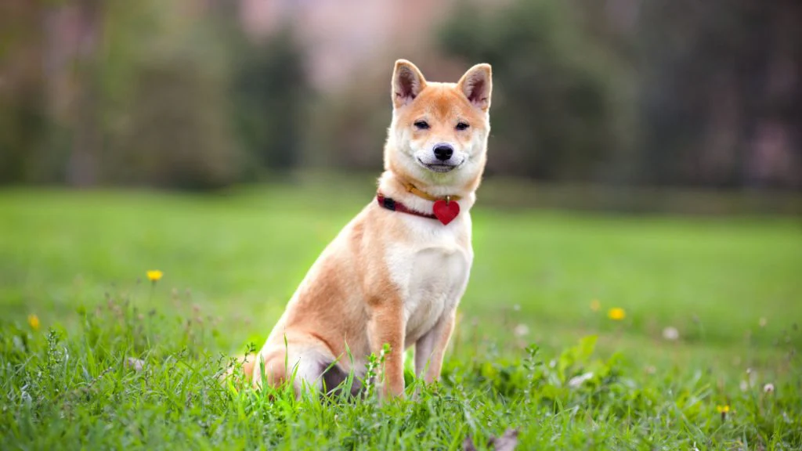

El Shiba Inu es un perro robusto de tamaño mediano, tipo Spitz (orejas erguidas, pelaje grueso y cola enroscada) y es una versión reducida del Akita. Los machos adultos miden alrededor de 39,5 cm y las hembras, 36,5 cm. El manto inferior grueso y suave está cubierto por una capa superior dura y lisa que puede ser de color rojo, rojo sésamo (rojo con pelo protector negro), negro y fuego o blanco.
